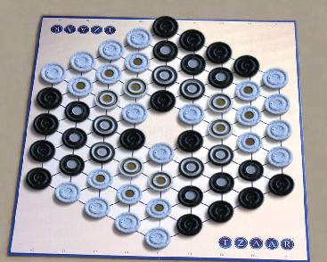

Tzaar
Tzaar is a combined stacking and capturing game. Every turn
consists of two moves, the first must
be a capturing move, and the second may be a capturing move or a
defensive move. You start with different numbers of 3 types of
pieces. The pieces all have the same power, but all three types
have to be preserved. Overall, a very nice balance of
offense and defence is required.
Read the official
rules on the project Gipf web site.
Robots: Strong
players haven't reported yet, but the bot is good enough to be a
challenge to beginners.
|

|